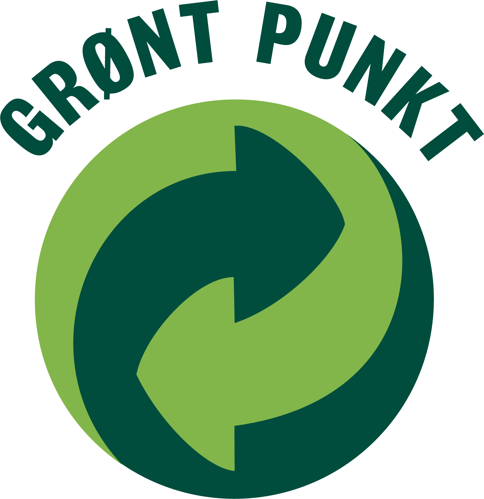

Om oss
Vigramør, matkultur på Sunnmøre
Fra de tidlige tider har det vært laget mør på bygdene på Vestlandet. Mør er en pølse av en grovmalt blanding svinekjøtt og krydder, i et forhold som gir en særegen smak og som har god holdbarhet.
På Vigra er det god tilgang til lokale krydderurter som ble benyttet i produksjonen, men tidligere var det slik at de fleste gårdene hadde sin egen oppskrift. Ikke bare på Vigra men ellers i fylket.
Selv om produsentene i hovedsak benyttet samme råstoff, utviklet de enkelte gårdene sin egen særpregne smak ved hjelp av hemmelige oppskrifter som gikk i arv gjennom generasjoner.
Om oss
1850 -
Ved århundreskifte endret levesettet ved vestkysten av Norge seg drastisk. Fra å hovedsakelig drive jordbruk fikk man utviklet redskap som gav adgang til de store ressursene vi vet havet inneholder. Dette førte til stor etterspørsel av arbeidskraft og dyktige håndverkere til drift av gårdene mens mennene var ute på fiske.
1927 -
På begynnelsen av det 20ende århundre gjorde harde levekår i fjordene på Sunnmøre at mange mennesker flyttet ut på kysten og bosatte der.
Blant disse var Ole Viddal fra Hjørundfjorden. Han var slakter, og flyttet til Vigra i 1927. Med seg hadde han sin egen oppskrift på hvordan mør skulle lages.
1950 -
Vigra er av natur veldig godt til grisehold. Øya er flat og er fri for snø og kulde nesten hele året. De fleste gårdene hadde derfor gris som husdyr.
2009 -
Oles mør ble etter hvert meget populær slik at flere leverte grisene til slakt hos ham, for så og få Vigramør tilbake. Siden 2009 har det vært fjerde generasjon Viddal, Olav Bjørn Roald som driver tradisjonen videre!
Sikring av høy kvalitet i alle ledd
Vigramøren inneholder ingen form for stivelse eller tilsetningsstoffer. Vi benytter kun svinekjøtt og spekk i produksjonen. Svinekjøttet er levert av Ringdal AS. De leverer norsk kjøtt av beste kvalitet. Vigramøren inneholder ingen form for stivelse, melk eller soya/melkeproteiner, og kan derfor trygt nytes av de som har matallergi eller matintoleranse.
For å sikre at produktene som produseres og serveres er helsemessig trygge, har Roald Kjøtt tette samarbeid med relevante aktører utover krav fra Mattilsynet.
- EFTA godkjenningsnummer "NORGE 264"
- Tett samarbeid med Anticimex
- Medlem nummer 43563 i "Grønt Punkt"
- Registrert i EPD basen hos Trade Solution
- Internkontroll ihht HACCP (Hazard Analysis and Critical Control Point)
Vårt utvidede samarbeid med ledende aktører innen kvalitetskontroll gjør at vi til enhver tid sikrer høy kvalitet på produksjon og dermed høy kvalitet på våre produkter.
Det legges ned mye tid og arbeid for å sikre at produktene som produseres er helsemessig trygge.
Oppskrifter
Vigramør - godt til mye hele året! Vigramøren kan benyttes til mye mer enn som tilbehør til juleribba og pinnekjøttet. Her er noen oppskrifter fra vår egen samling.
Julemiddag
Kok opp rikelig vann i en kjele. Legg i Vigramøren, nytt oppkok.La den trekke ca 35-40 min. Deles opp i passelige biter før servering. Passer utmerket til pinnekjøtt, svineribbe, rødkål, surkål og poteter!
Stormsuppe / Brentsnut
Kok opp en kjele med vann med bulljongterninger eller en pose Toro kjøttsuppe som basis. Tilsett friske, oppkuttede grønnsaker som kålrot, gulerøtter, selleri, purreløk, eller andre favoritter i tillegg til poteter. Form Vigramøren til små kjøtt boller. Vigramøren gir en fantastisk god kraft og smak.
Potetball / Komle
Kok opp rikelig vann i en kjele. Legg i Vigramøren og gi et nytt oppkok. La den videre trekke i ca 35-40 min. Deles opp i passelige biter før servering. Kombiner Vigramøren med annet godt tilbehør som kålrot og lettsaltet fårekjøtt. Husk bacon biten i ballen! God appetitt!
Stekt Vigramør, "Thai-Style"
Del Vigramøen opp i passelige biter. Del deretter bitene på langs og stek Vigramøren godt i stekepannen. Serveres med Jasminris, gjerne Thai Hom Mali Rice, soyasaus og frisk salat og chilli etter ønske.Kontakt oss
Telefon: 988 71 275, epost: obr@mimer.no